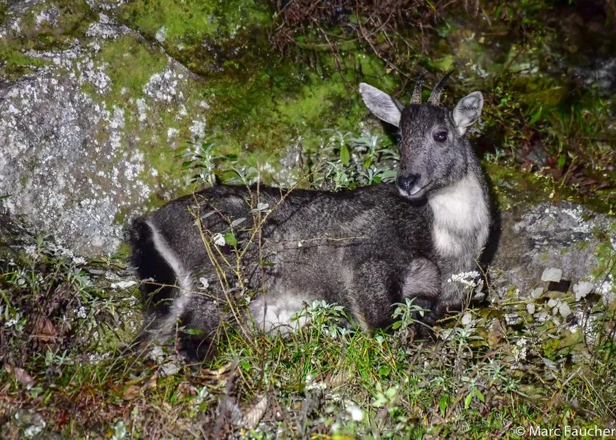

哺乳动物 · 动物界
斑羚 Naemorhedus griseus

亚洲山地的野山羊近亲，毛色灰褐、喉部有浅色斑块，善在陡峭岩壁攀爬跳跃，因盗猎和栖息地破碎而受威胁。
- 分类
- 门脊索动物门纲哺乳纲目偶蹄目科牛科属斑羚属
- 栖息环境
- 海拔 1000–4000 米的山地森林与陡峭岩壁
- 地理分布
- 中国西南、华南及印度、缅甸、泰国、越南的山地
- 保护级别
- IUCN 易危（VU）；中国国家二级保护动物
物种志
斑羚体长 0.9–1.3 米，肩高 0.6–0.8 米，体重 20–45 kg，雄性略大于雌性。它的被毛为灰褐至棕褐色，背脊有一条深色纵纹，喉部有浅色斑块，四肢短而有力，蹄尖而窄，适合在岩壁上行走；雌雄都长有小角，角向后弯曲。
斑羚分布于中国、印度、缅甸、泰国和越南的山地森林与岩壁，栖息于海拔 1000–4000 米的陡峭山地和针阔混交林。它以草、树叶、嫩枝和苔藓为食，结成数只至十几只的群体，晨昏活动，善于在岩壁间跳跃攀爬。雌性妊娠期约 6–7 个月，每胎 1 仔。由于非法捕猎、栖息地破碎和人类活动干扰，斑羚数量下降，被列为易危，中国将其列为国家二级保护动物。
形态与习性
- 食性草、树叶、嫩枝与苔藓
- 体长0.9–1.3 m，肩高 0.6–0.8 m
- 体重20–45 kg
- 寿命野外约 10–15 年
- 繁殖妊娠期约 6–7 个月，每胎 1 仔
- 角雌雄都有小角，向后弯曲
- 攀爬蹄尖而窄，善在岩壁间跳跃
趣味知识
- 斑羚的蹄尖而窄，能在陡峭岩壁上稳稳行走。
- 雌雄斑羚都长有小角，角向后弯曲。
- 它多在晨昏活动，结成数只至十几只的群体。
- 中国将斑羚列为国家二级保护动物。